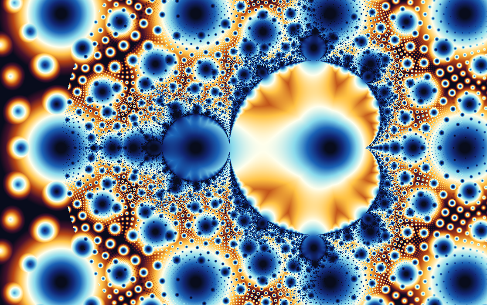

\(c=0\)
0, 0, 0, 0, …
The orbit remains fixed at the origin.
BoundedwxChaos documentation
A map of order and chaos hidden inside one of mathematics' simplest iterative rules.
A single formula creates an apparently endless landscape of bulbs, spirals, filaments, and miniature clones. Every point in the image represents a different mathematical experiment.

The Mandelbrot set is not one dynamical system. It is a map of an entire family of systems. Each point \(c\) tells us whether repeatedly applying \(z \mapsto z^2+c\), with \(z\) starting at zero, remains bounded or eventually escapes toward infinity.
From a distance, the Mandelbrot set has a recognizable silhouette: a large cardioid with circular bulbs attached to it. Up close, that clean outline dissolves into branching structures, narrow tendrils, spirals, and smaller clones of the whole set.
The dark region represents \(c\) parameters whose orbit does not escape to infinity during the calculation. The colors outside it show how quickly escaping orbits go beyond the chosen bailout radius \(|z|>2\).
Choose a point. Each pixel in the image represents a complex number \(c\).
Complex numbers have a real and imaginary part, \(x + iy\). \(x\) is the real part and corresponds to the horizontal axis, while \(y\) is the imaginary part and corresponds to the vertical axis.
Iterate the formula. Begin with \(z_0=0\), square the current value, and add \(c\) repeatedly.
This is a recurrence relation. We start with \(z_0 = 0\). To obtain \(z_1\) we apply the recurrence: \[ z_1 = z_0^2 + c = c \] Once we have this result we can calculate \(z_2\) by applying the same rule again: \[ z_2 = z_1^2 + c = c^2 + c \] Every subsequent value is obtained in exactly the same way: \[ \begin{aligned} z_3 &= z_2^2 + c = (c^2 + c)^2 + c \\ z_4 &= z_3^2 + c = \bigl((c^2 + c)^2 + c\bigr)^2 + c \\ z_5 &= z_4^2 + c = \bigl(\bigl((c^2 + c)^2 + c\bigr)^2 + c\bigr)^2 + c \\ &\vdots \end{aligned} \]
Expressions involving complex numbers can be expanded using ordinary algebra, together with the defining property \(i^2=-1\).
Write the current value and the selected parameter as:
\[ z=z_x+iz_y, \qquad c=c_x+ic_y \]We can then expand \(z^2+c\):
\[ \begin{aligned} z^2+c &= (z_x+iz_y)^2+(c_x+ic_y) \\ &= z_x^2+2iz_xz_y+i^2z_y^2+c_x+ic_y \end{aligned} \]Because \(i^2=-1\), this becomes:
\[ z^2+c = (z_x^2-z_y^2+c_x) + i(2z_xz_y+c_y) \]Therefore, each iteration can be computed using two real-valued equations:
\[ \begin{aligned} z_{x,n+1} &= z_{x,n}^2-z_{y,n}^2+c_x \\ z_{y,n+1} &= 2z_{x,n}z_{y,n}+c_y \end{aligned} \]For example, because \(z_0=0\):
\[ \begin{aligned} z_1 &= c_x+ic_y \\ z_2 &= (c_x+ic_y)^2+c_x+ic_y \\ &= (c_x^2-c_y^2+c_x) +i(2c_xc_y+c_y) \\ &\vdots \end{aligned} \]To render the Mandelbrot set, evaluate the recurrence for every pixel in the image. Each pixel is converted into a complex parameter \(c=c_x+i c_y\), while the orbit starts at \(z_0=0\).
Instead of using complex-number objects, the calculation can be written using the real and imaginary components directly:
\[ \begin{aligned} z_{x,n+1} &= z_{x,n}^2-z_{y,n}^2+c_x \\ z_{y,n+1} &= 2z_{x,n}z_{y,n}+c_y \end{aligned} \]
for each pixel (px, py):
cx = map px to the horizontal fractal range
cy = map py to the vertical fractal range
zx = 0
zy = 0
iteration = 0
while zx*zx + zy*zy <= 4
and iteration < maxIterations:
nextZx = zx*zx - zy*zy + cx
nextZy = 2*zx*zy + cy
zx = nextZx
zy = nextZy
iteration++
if iteration == maxIterations:
color the pixel as inside the set
else:
color the pixel using iteration
The test \(z_x^2+z_y^2>4\) is equivalent (and faster) to checking \(|z|>2\). Once this happens, the orbit is guaranteed to escape, so no further iterations are necessary.
If you are brave you can try this in wxChaos using the Script editor!.
Watch the orbit. If a point in the orbit moves more than two units away from the center, that is \(|z|>2\), it is guaranteed to keep escaping outward. If that never happens before the iteration limit is reached, wxChaos treats the point as belonging to the set.
A complex number \(z=x+iy\) can be viewed as a point with horizontal coordinate \(x\) and vertical coordinate \(y\).
Its distance from the center is:
\[ |z|=\sqrt{x^2+y^2} \]To avoid calculating a square root on every iteration, programs usually compare the squared distance instead:
\[ x^2+y^2>4 \]This is equivalent to checking whether the distance is greater than two.
0, 0, 0, 0, …
The orbit remains fixed at the origin.
Bounded0, −1, 0, −1, …
The orbit repeats in a stable period-two cycle.
Bounded0, 1, 2, 5, 26, …
The values quickly grow without bound.
EscapingEach dot below is one selected value of \(c\). The grid begins at the first visible step, \(z_1=c\). Press More iterations to apply \(z_{n+1}=z_n^2+c\) again and watch where every orbit moves.
Can you see a familiar shape emerging from the iteration pattern after several iterations? It is the Mandelbrot set!
Start with the complete set and identify the main cardioid and the large period-two bulb attached to its left.
Zoom into the narrow boundary where those two regions meet. The smooth silhouette will give way to branching structures and curled forms traditionally associated with Seahorse Valley.
Select a point near the boundary and display its orbit. Move the point slightly and observe how dramatically the orbit can change.
Open the corresponding Julia set. Move the selected parameter across the Mandelbrot boundary and compare the connected and disconnected Julia sets on either side.
For every parameter \(c\), the function \(f_c(z)=z^2+c\) has its own Julia set in the \(z\)-plane. The Mandelbrot set records how those Julia sets behave.
When \(c\) belongs to the Mandelbrot set, the corresponding Julia set is connected. When \(c\) lies outside it, the Julia set is disconnected and breaks into separate pieces.
This is why moving through Mandelbrot parameter space can be understood as browsing an atlas of the entire quadratic Julia family.

Coloring methods do not change the Mandelbrot set itself. They reveal different properties of the orbits surrounding it. Each coloring method is called a "Rendering algorithm".
You can explore the rendering algorithms in the "Rendering → Renderer options" menu.

Colors each point according to the iteration at which its orbit escapes.
Best for understanding the basic algorithm. Each color represents the iteration at which the orbit escapes. Apply in wxChaos
Removes hard iteration bands and reveals continuous gradients in escape speed.
Best for polished exterior renders. Apply in wxChaos
Measures how closely escaping orbits pass near the lattice of complex integer points.
Best for revealing grid-like orbit structure. Apply in wxChaos
Uses the direction of the escaping orbit to emphasize rays and directional structure.
Best for revealing exterior geometry. Apply in wxChaos
Converts relationships between successive orbit values into flowing textures.
Best for richly detailed coloring. Apply in wxChaos
Measures how closely each orbit approaches the real and imaginary axes.
Best for experimental and decorative images. Apply in wxChaos
Draws where escaping orbits travel instead of coloring only the parameter that produced them.
Best for seeing the paths behind the image. Apply in wxChaosThe Mandelbrot set has an informal geography created by generations of explorers. These named regions are useful starting points for learning how its structures repeat and transform.

A narrow region filled with curled spirals and repeating forms resembling seahorse tails.
Open location
A region where broad branching shapes split into trunk-like structures at smaller scales.
Open location
A smaller echo of the complete set, surrounded by local decorations that make every copy distinct.
Open locationOrdinary floating-point numbers eventually lose the ability to distinguish neighboring pixels during an extreme zoom. wxChaos can switch to high-precision arithmetic and use perturbation techniques to continue exploring structures far below the scale available to standard double precision.
Increasing the iteration limit reveals points whose orbits take longer to escape. Increasing numerical precision preserves the coordinates needed to distinguish tiny features. Deep zooming requires both.
Pierre Fatou and Gaston Julia establish the foundations of complex dynamics by studying repeated rational functions, decades before high-resolution computer visualization.
Digital computation makes it practical to inspect parameter spaces visually and to experiment with enormous numbers of iterated points.
Images associated with Benoit Mandelbrot help make the set a defining symbol of fractal geometry and computer-generated mathematical art.
Arbitrary precision and perturbation rendering allow explorers to visit structures at depths that early visualizations could not approach.
The Mandelbrot set brings together iteration, stability, periodicity, geometry, and chaos in a single image. Its boundary demonstrates how an extremely simple deterministic rule can produce structures of extraordinary complexity.
It is also a gateway: learning to read the Mandelbrot set makes it easier to understand Julia sets, orbit behavior, bifurcation, and the broader subject of complex dynamics.
Documentación de wxChaos
Un mapa de orden y caos escondido en una de las reglas iterativas más simples de las matemáticas.
Una sola fórmula crea un paisaje aparentemente interminable de bulbos, espirales, filamentos y clones en miniatura. Cada punto de la imagen representa un experimento matemático distinto.
El conjunto de Mandelbrot no es un solo sistema dinámico. Es un mapa de una familia completa de sistemas. Cada punto \(c\) indica si al aplicar repetidamente \(z \mapsto z^2+c\), comenzando con \(z=0\), la órbita permanece acotada o termina escapando hacia el infinito.
Desde lejos, el conjunto de Mandelbrot tiene una silueta reconocible: una gran cardioide con bulbos circulares unidos. De cerca, ese contorno limpio se disuelve en estructuras ramificadas, zarcillos estrechos, espirales y clones más pequeños del conjunto completo.
La region oscura representa parámetros \(c\) cuya orbita no escapa al infinito durante el cálculo. Los colores exteriores muestran que tan rapido las órbitas que escapan crecen más allá del radio de escape elegido \(|z|>2\).
Elige un punto. Cada píxel de la imagen representa un número complejo \(c\).
Los números complejos tienen una parte real y una parte imaginaria, \(x + iy\). \(x\) es la parte real y corresponde al eje horizontal, mientras que \(y\) es la parte imaginaria y corresponde al eje vertical.
Itera la fórmula. Comienza con \(z_0=0\), eleva al cuadrado el valor actual y suma \(c\) repetidamente.
Esto es una relación de recurrencia. Empezamos con \(z_0 = 0\). Para obtener \(z_1\) aplicamos la recurrencia: \[ z_1 = z_0^2 + c = c \] Una vez que tenemos este resultado podemos calcular \(z_2\) aplicando la misma regla otra vez: \[ z_2 = z_1^2 + c = c^2 + c \] Cada valor posterior se obtiene exactamente de la misma forma: \[ \begin{aligned} z_3 &= z_2^2 + c = (c^2 + c)^2 + c \\ z_4 &= z_3^2 + c = \bigl((c^2 + c)^2 + c\bigr)^2 + c \\ z_5 &= z_4^2 + c = \bigl(\bigl((c^2 + c)^2 + c\bigr)^2 + c\bigr)^2 + c \\ &\vdots \end{aligned} \]
Las expresiones con números complejos pueden expandirse usando algebra ordinaria junto con la propiedad \(i^2=-1\).
Escribe el valor actual y el parametro seleccionado como:
\[ z=z_x+iz_y, \qquad c=c_x+ic_y \]Entonces podemos expandir \(z^2+c\):
\[ \begin{aligned} z^2+c &= (z_x+iz_y)^2+(c_x+ic_y) \\ &= z_x^2+2iz_xz_y+i^2z_y^2+c_x+ic_y \end{aligned} \]Como \(i^2=-1\), esto se convierte en:
\[ z^2+c = (z_x^2-z_y^2+c_x) + i(2z_xz_y+c_y) \]Por lo tanto, cada iteración puede calcularse usando dos ecuaciones de valores reales:
\[ \begin{aligned} z_{x,n+1} &= z_{x,n}^2-z_{y,n}^2+c_x \\ z_{y,n+1} &= 2z_{x,n}z_{y,n}+c_y \end{aligned} \]Por ejemplo, como \(z_0=0\):
\[ \begin{aligned} z_1 &= c_x+ic_y \\ z_2 &= (c_x+ic_y)^2+c_x+ic_y \\ &= (c_x^2-c_y^2+c_x) +i(2c_xc_y+c_y) \\ &\vdots \end{aligned} \]Para renderizar el conjunto de Mandelbrot, evalúa la recurrencia para cada pixel de la imagen. Cada pixel se convierte en un parametro complejo \(c=c_x+i c_y\), mientras que la órbita comienza en \(z_0=0\).
En lugar de usar objetos de números complejos, el cálculo puede escribirse directamente con las componentes real e imaginaria:
\[ \begin{aligned} z_{x,n+1} &= z_{x,n}^2-z_{y,n}^2+c_x \\ z_{y,n+1} &= 2z_{x,n}z_{y,n}+c_y \end{aligned} \]
for each pixel (px, py):
cx = map px to the horizontal fractal range
cy = map py to the vertical fractal range
zx = 0
zy = 0
iteration = 0
while zx*zx + zy*zy <= 4
and iteration < maxIterations:
nextZx = zx*zx - zy*zy + cx
nextZy = 2*zx*zy + cy
zx = nextZx
zy = nextZy
iteration++
if iteration == maxIterations:
color the pixel as inside the set
else:
color the pixel using iteration
La prueba \(z_x^2+z_y^2>4\) equivale, y es más rápida, a comprobar \(|z|>2\). Cuando esto ocurre, está garantizado que la órbita escapará, asi que no hacen falta más iteraciones.
¡Si te animas, puedes probar esto en wxChaos usando el Editor de scripts!.
Observa la órbita. Si un punto de la órbita se aleja mas de dos unidades del centro, se garantiza que seguirá escapando hacia afuera. Si eso no ocurre antes de alcanzar el límite de iteraciones, wxChaos trata el punto como perteneciente al conjunto.
Un número complejo \(z=x+iy\) puede verse como un punto con coordenada horizontal \(x\) y coordenada vertical \(y\).
Su distancia al centro es:
\[ |z|=\sqrt{x^2+y^2} \]Para evitar calcular una raiz cuadrada en cada iteración, los programas suelen comparar la distancia al cuadrado:
\[ x^2+y^2>4 \]Esto equivale a comprobar si la distancia es mayor que dos.
0, 0, 0, 0, ...
La órbita permanece fija en el origen.
Acotado0, -1, 0, -1, ...
La órbita se repite en un ciclo estable de periodo dos.
Acotado0, 1, 2, 5, 26, ...
Los valores crecen rápidamente sin límite.
EscapaCada punto de abajo es un valor seleccionado de \(c\). La cuadrícula empieza en el primer paso visible, \(z_1=c\). Pulsa Más iteraciones para aplicar \(z_{n+1}=z_n^2+c\) otra vez y observar hacia donde se mueve cada órbita.
¿Puedes ver una forma familiar emergiendo del patrón de iteración después de varias iteraciones? ¡Es el conjunto de Mandelbrot!
Empieza con el conjunto completo e identifica la cardioide principal y el gran bulbo de periodo dos unido a su izquierda.
Acércate a la frontera estrecha donde esas dos regiones se encuentran. La silueta suave dara paso a estructuras ramificadas y formas enrolladas asociadas con Seahorse Valley.
Selecciona un punto cerca de la frontera y muestra su órbita. Mueve el punto ligeramente y observa lo dramáticamente que puede cambiar la órbita.
Abre el conjunto de Julia correspondiente. Mueve el parametro seleccionado a traves de la frontera de Mandelbrot y compara los conjuntos de Julia conectados y desconectados a cada lado.
Para cada parametro \(c\), la función \(f_c(z)=z^2+c\) tiene su propio conjunto de Julia en el plano \(z\). El conjunto de Mandelbrot registra cómo se comportan esos conjuntos de Julia.
Cuando \(c\) pertenece al conjunto de Mandelbrot, el conjunto de Julia correspondiente es conectado. Cuando \(c\) queda fuera, el conjunto de Julia es desconectado y se rompe en piezas separadas.
Por eso moverse por el espacio de parámetros de Mandelbrot puede entenderse como explorar un atlas de toda la familia cuadrática de Julia.
Los metodos de coloreado no cambian el conjunto de Mandelbrot en si. Revelan propiedades distintas de las órbitas que lo rodean. Cada método de coloreado se denomina "algoritmo de renderizado".
Puedes explorar los algoritmos de renderizado en el menú "Renderizador → Opciones de renderizado".
Colorea cada punto según la iteración en la que escapa su orbita.
Ideal para entender el algoritmo basico. Cada color representa la iteración en la que escapa la órbita. Aplicar en wxChaos
Elimina bandas duras de iteración y revela gradientes continuos en la velocidad de escape.
Ideal para renderizados exteriores pulidos. Aplicar en wxChaosMide que tan cerca pasan las órbitas de la reticula de puntos enteros complejos.
Ideal para revelar estructuras de órbita parecidas a una cuadrícula. Aplicar en wxChaos
Usa la dirección de la órbita que escapa para enfatizar rayos y estructura direccional.
Ideal para revelar la geometria exterior. Aplicar en wxChaos
Convierte relaciones entre valores sucesivos de la órbita en texturas fluidas.
Ideal para coloreado con mucho detalle. Aplicar en wxChaos
Mide que tan cerca se aproxima cada orbita a los ejes real e imaginario.
Ideal para imágenes experimentales y decorativas. Aplicar en wxChaos
Dibuja por donde viajan las orbitas escapadas en vez de colorear solo el parametro que las produjo.
Ideal para ver los caminos detrás de la imagen. Aplicar en wxChaosEl conjunto de Mandelbrot tiene una geografía informal creada por generaciones de exploradores. Estas regiones con nombre son buenos puntos de partida para aprender como sus estructuras se repiten y se transforman.
Una region estrecha llena de espirales enrolladas y formas repetidas que recuerdan colas de caballito de mar.
Abrir ubicación
Una región donde formas ramificadas amplias se dividen en estructuras parecidas a trompas a escalas menores.
Abrir ubicación
Un eco más pequeño del conjunto completo, rodeado de decoraciones locales que hacen distinta a cada copia.
Abrir ubicaciónLos números de punto flotante ordinarios (los números decimales que las computadoras usan normalmente) tarde o temprano pierden la capacidad de distinguir píxeles vecinos durante un zoom extremo. wxChaos puede cambiar a aritmetica de alta precision y usar técnicas de perturbación para seguir explorando estructuras muy por debajo de la escala disponible con precision estándar.
Aumentar el límite de iteraciones revela puntos cuyas orbitas tardan más en escapar. Aumentar la precision numérica conserva las coordenadas necesarias para distinguir rasgos diminutos. Un zoom profundo requiere ambas cosas.
Pierre Fatou y Gaston Julia establecen las bases de la dinámica compleja al estudiar funciones racionales repetidas, décadas antes de la visualización por computadora de alta resolución.
La computación digital hace practico inspeccionar visualmente espacios de parámetros y experimentar con enormes cantidades de puntos iterados.
Las imágenes asociadas con Benoit Mandelbrot ayudan a convertir el conjunto en un símbolo definitorio de la geometria fractal y del arte matemático generado por computadora.
La precision arbitraria y el renderizado por perturbación permiten visitar estructuras a profundidades que las visualizaciones tempranas no podían alcanzar.
El conjunto de Mandelbrot reune iteración, estabilidad, periodicidad, geometria y caos en una sola imagen. Su frontera demuestra como una regla determinista extremadamente simple puede producir estructuras de complejidad extraordinaria.
También es una puerta de entrada: aprender a leer el conjunto de Mandelbrot facilita entender conjuntos de Julia, comportamiento orbital, bifurcación y el campo más amplio de la dinámica compleja.